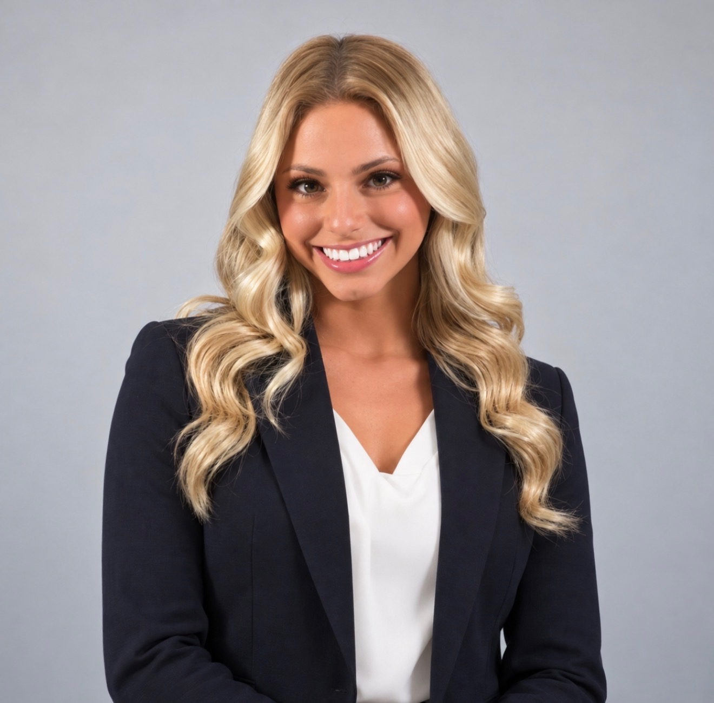

Member
Phi Alpha Delta Pre-Law Fraternity
Participate in LSAT preparation workshops, law school visits, and legal career events to build professional skills and connections.
New Orleans, Louisiana · Tulane ’27
A Political Science student and aspiring law student bringing experience in federal chambers, legal practice, and team leadership to the next opportunity.

01 / About
I’m a senior at Tulane University in New Orleans, majoring in Political Science with a minor in Psychology, with the goal of attending law school. I’m interested in how legal decisions get made and how people experience the justice system.
As an intern in the chambers of Judge Jay C. Zainey at the U.S. District Court for the Eastern District of Louisiana, I reviewed case materials and pre-sentence reports, observed oral arguments and sentencing, and took part in chambers conferences. Before college I interned at AWM Law Offices in New Jersey, drafting correspondence and keeping case files organized.
Outside the classroom, I captain the Tulane Cheerleading team and participate in Phi Alpha Delta’s pre-law community. Alongside my previous front-desk role at Drybar, those experiences have taught me to stay organized, keep calm under pressure, and look out for the people around me.
02 / Experience
U.S. District Court, Eastern District of Louisiana
Tulane University Cheerleading
Drybar
AWM Law Offices
03 / Leadership & Involvement
Phi Alpha Delta Pre-Law Fraternity
Participate in LSAT preparation workshops, law school visits, and legal career events to build professional skills and connections.
Alpha Epsilon Phi Sorority
Connect new members with the executive board, run orientation events, and launched mentorship and peer-support programs that increased first-year involvement.
Academy of the Holy Angels
Led school-wide initiatives and events, represented student interests to administration, and oversaw budgeting and volunteers.
Bergen Catholic Cheerleading
Led practices and competition choreography, coordinated fundraisers, and worked closely with coaching staff.
04 / Selected work
I built this portfolio with Claude and Codex to bring my experience, education, and professional interests together in one place.
After instructor feedback, I refined the design, shortened the experience text lines, added my updated résumé, and documented the changes in GitHub.
Explore the code & process05 / Education
School of Liberal Arts · New Orleans, LA
Political Science major · Psychology minor
Expected May 2027
Demarest, NJ · Class of 2023
Let’s connect
I’m looking for legal internships and opportunities to learn more about the law. The best way to reach me is by email.